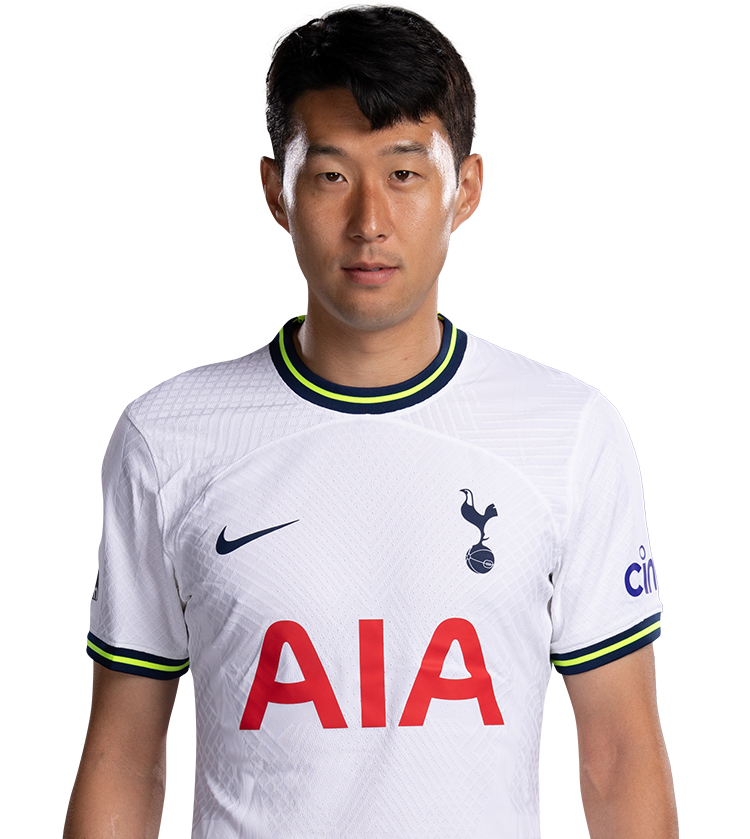

My Favorite Soccer Players

Lionel Messi
Messi was born on 24 June 1987 in Rosario, Santa Fe, the third of four children of Jorge Messi, a steel factory manager.

Kevin De Bruyne
De Bruyne began his career with hometown club KVV Drongen in 1997. Two years later, he joined Gent and moved to Genk in 2005.

Christian Pulisic
Pulisic (born September 18, 1998) is an American professional soccer player who plays for Premier League club Chelsea and the United States national team.

Son Heung-min
born 8 July 1992) is a South Korean professional footballer who plays for Premier League club Tottenham Hotspur and captains the South Korea national team.